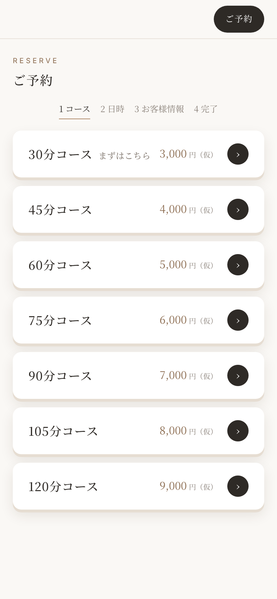
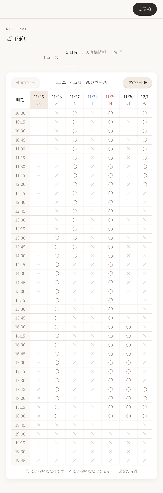
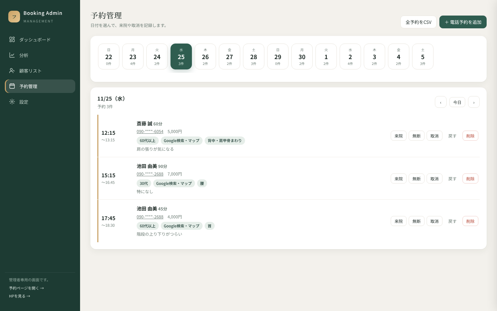
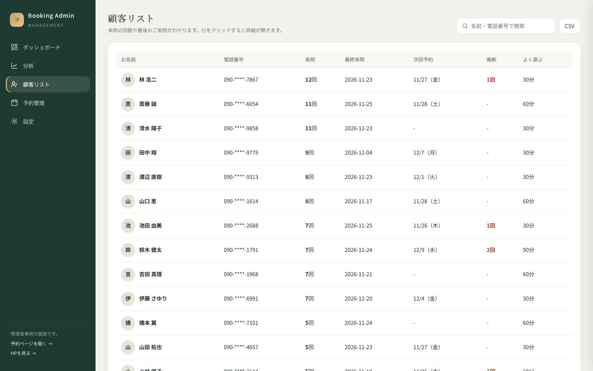
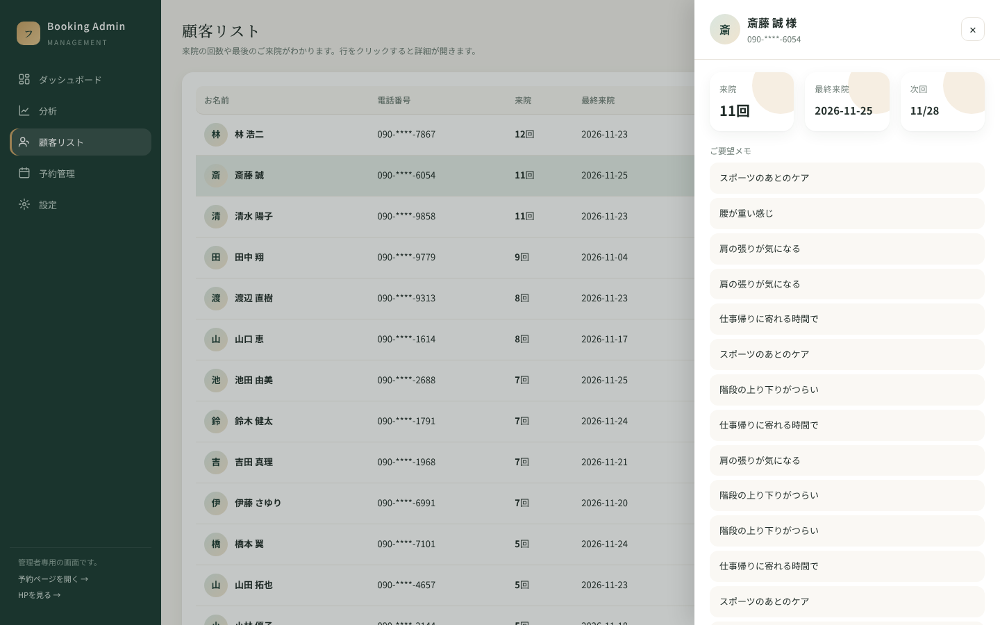
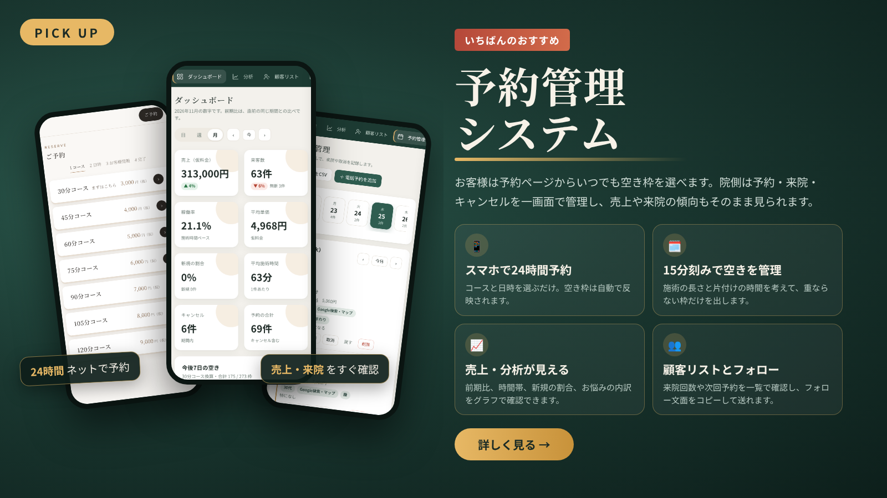

お客様はスマホからいつでも空き枠を選んで予約できます。院側は、予約・来院・キャンセルを一画面で管理し、売上や来院の傾向もそのまま確認できます。
コースを選んで、空いている時間を選ぶだけ。ご予約までの流れは次の4ステップです。


施術の長さに合わせて選びます。
15分刻みの空きから選べます。
お名前・ご連絡先・年齢層・ご来院のきっかけ・お悩みの部位を入力します。
内容を確認して、予約が完了します。
予約の確認、来院の記録、顧客の把握、売上の確認をひとつの画面で行えます。



お客様がスマホから好きな時間に予約できます。電話の対応を減らせます。
施術の時間と片付けの時間を考えて、重ならない枠だけを表示します。
前期比、時間帯別の予約、新規の割合、お悩みの内訳をグラフで確認できます。
来院回数や次回予約を把握し、フォロー文面をコピーして送れます。CSVでの書き出しにも対応しています。
